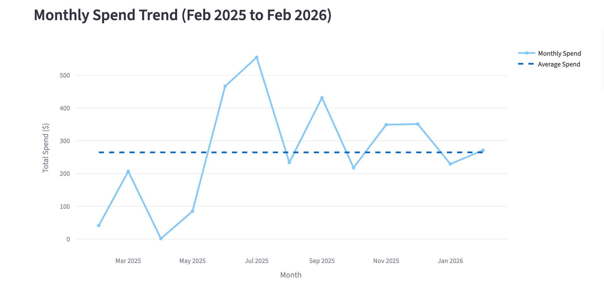
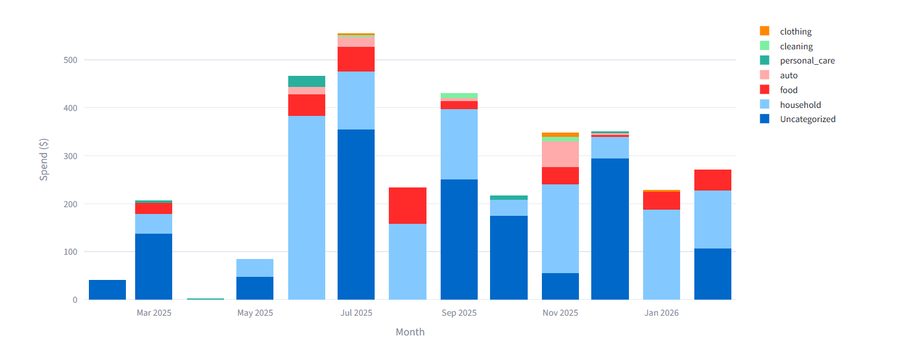

Receipt Data Technical Report
Introduction
The Receipt Processor project aims to develop a tool for processing and analyzing receipt data. Managing and understanding personal spending can be time-consuming when receipts exist as unstructured images, PDFs, or loose physical documents. Converting this unstructured data into a usable format presents a key challenge. Automating this process enables more efficient tracking, improved accuracy, and clearer insight into spending behavior over time that would otherwise be difficult to obtain.
Using over a year’s worth of personal receipts from Walmart, this project seeks to answer how much was spent over the past year, and how does spending vary by month? It also seeks to answer how spending in one month compares to the previous month. Additionally, it seeks to answer how does spending differ across categories over the year?
To address these questions, we developed a pipeline that collects receipt data, parses and structures it, stores it in a database, and enables analysis through a user-friendly interface. The receipt_processor Python package, along with a corresponding Streamlit application, allows users to upload their own receipt data and generate insights into spending patterns, category-level expenditures, and trends over time, making it useful for individuals and businesses interested in financial tracking and expense management.
Data Description
The receipt data used in this project was collected from a personal Walmart account. Receipts were obtained using a combination of automated scraping techniques and manual downloads from the account purchase history section of the Walmart website. All receipts were saved as PDF files.
Most receipts follow a traditional in-store format similar to printed cash register receipts. However, a small subset corresponding to online orders (approximately 10 receipts) have a distinct layout. Webscraping attempts with requests and BeautifulSoup were made, but Playwright, a webscraping tool that allows for automation of logged-in, dynamic pages, was ultimately used to assist in locating and prompting manual downloads of traditional receipt PDFs. Purchase history filters were used to identify online orders, which were then manually reviewed and downloaded.
The dataset includes receipts ranging from January 2025 through March 2026. Each receipt contains information such as the date and time of purchase, store name, store address and phone number, number of items purchased, total transaction amount, and item-level details including product descriptions, SKUs, and individual prices. The key variables used in this analysis include store name, purchase date, total amount, item names and prices, and assigned spending categories.
A primary limitation of the dataset is that it consists exclusively of Walmart receipts. While it captures all personal Walmart purchases within the specified time frame, it does not account for spending at other retailers. As a result, the findings may not generalize to overall spending behavior across multiple vendors. Additionally, the dataset is limited in size, with a total of 73 receipts, which may affect the robustness of certain analyses. Despite these limitations, the dataset provides a valuable case study for developing and testing the receipt processing pipeline.
The final structured dataset organizes receipt-level and item-level information into a tabular format, where each receipt is linked to its corresponding items. This data is stored in a relational database using SQLite, with separate tables for receipts and individual items connected through a unique identifier. The receipts table includes variables such as purchase date, time, vendor, and total transaction amount, while the items table contains details including item name/description, price, and assigned category. To achieve this final structured format from the original raw PDFs, several steps were taken to clean and prepare the data.
Data Cleaning and Preparation
The data cleaning process began with preparing receipt files for text extraction. Since receipts were stored as PDF documents, each file was first converted into image format (PNG) using the PyMuPDF library. This step was necessary because OCR and LLM methods operate more reliably on image data than on raw PDF files, and converting receipts to images ensures more consistent text extraction across varying receipt formats.
To extract structured information, a combination of optical character recognition (OCR) and large language model (LLM) techniques was used. OCR was first applied to extract raw text from receipt images. Because this text is often unstructured and inconsistent, an LLM was then used in combination to the extracted text to procure fields such as item names, prices, dates, and totals in JSON format. To support this process, a locally hosted LLM was used via Ollama. While more powerful cloud-based models were considered, a local model was ultimately selected to preserve data privacy, as receipt data contains sensitive personal purchase information. Although the chosen model has more limited capacity, it provides a practical balance between performance and privacy by ensuring that all data processing occurs locally.
Several challenges were encountered during the data cleaning process. One challenge was the variability in receipt formats. While most receipts followed a standard in-store layout, online order receipts differed significantly in structure. Additionally, OCR extraction introduced inconsistencies such as misread characters, missing fields, and irregular spacing, which complicated further processing. Even after OCR, the extracted text remained unstructured, requiring further interpretation of the LLM to identify meaningful fields such as item names, prices, and totals.
Another challenge arose from item-level formatting within receipts. Some purchases were represented across multiple lines, such as weighted produce or automotive-related items, where quantities, unit prices, and totals were split across separate lines. This made it difficult to correctly associate all components of a single item and required additional logic.
In some cases, receipt files themselves presented issues. For example, one downloaded PDF was blank, likely due to incomplete loading prior to download, resulting in failed parsing attempts. Additionally, certain receipts, such as long multi-page documents and those containing refund or return information, introduced complexities that made automated extraction unreliable. These failed-to-parse, multi-page, and refund receipts were flagged and handled through manual data entry to ensure accuracy and completeness in the final dataset.
To evaluate the accuracy of the extraction process, a validation framework was implemented using a set of manually curated ground-truth JSON files. It compared extracted outputs against these reference files, computing metrics such as field match rates and displaying discrepancies. This validation process helped identify systematic extraction errors, ensured a reasonable success rate, and supports iterative improvements to the pipeline.
To further prepare the data, several transformations were applied. Extracted dates and times were normalized into a consistent format. Item-level and receipt-level data were structured into relational tables, ensuring that each receipt is properly linked to its corresponding items. In addition, total tax amounts were proportionally distributed across individual items based on their pre-tax prices, resulting in item-level price-with-tax values. This allows category-level spending analysis to reflect the full cost of purchases rather than pre-tax amounts alone.
Item categories were assigned using an LLM-driven classification step that examined each transaction individually. Rather than batching all items together, the system classified each item in its own prompt to keep the model’s context focused and improve accuracy for short item descriptions. This per-transaction approach helped reduce classification errors caused by longer, memory-intensive prompts and made it easier to enforce a fixed category vocabulary for the final dataset.
Methodology/Analysis
The analysis focused on summarizing spending behavior using descriptive statistics and aggregation methods applied to the cleaned and structured dataset. These methods were selected to directly address the guiding questions of the project, which center on understanding total spending, trends over time, and differences across spending categories.
Several key metrics were computed. Total spending was calculated from February 2025 to February 2026, to provide an overall measure of yearly expenditures. Monthly spending totals were then derived by grouping transactions by purchase date, allowing for the analysis of spending patterns over time. In addition, average monthly spending was calculated based on the number of months within the selected time frames, providing a baseline for comparing fluctuations across months.
Category-level spending was analyzed using item-level data, where items grouped by category were aggregated using price-with-tax values. This enabled comparisons of how spending was distributed across categories by year. In addition, category-level trends were examined by aggregating spending within each category by month, providing insight into how spending patterns evolved over time.
Visualizations were primarily used to examine trends over time and differences across spending categories. These visual tools allowed for more intuitive interpretation of patterns such as monthly fluctuations in spending and shifts in category-level expenditures.
Results
The final dataset consists of receipts collected from January 2025 to March 2026, including a total of 73 receipts. Total spending over the analyzed period was $3,483.80. Monthly spending in for the year from February 2025 to February 2026 varied, with the highest spending observed in July ($554.59) and the lowest in April ($1.32).
As shown in Figure 1, spending exhibited noticeable changes occurring between May and June 2025, where spending increased from $84.93 to $466.25, and between July and August 2025, where spending decreased from $554.59 to $233.59.

The average monthly spending for the year from February 2025 to February 2026 was $264.41 and for the quarter from Deceember 2025 to February 2026 was $283.68, suggesting that spending patterns were relatively stable throughout the year with some slight increases. Compared to these baselines, several months—such as June and July—were above average, while others—such as February, April, and May—fell far below.
These fluctuations may reflect specific events such as a summer vacation or campout in June and July, which could explain the higher spending during those months. In contrast, the lower spending in April and May may be due to less shopping required when staying with relatives.
Spending distribution across categories is shown in Figure 2. The largest dollar amount spent on food was $76.27 in August, while the largest amount spent on household items was $383.66 in June. The large proportion of spending on household items in June may be related to the aforementioned vacation, which likely required purchasing supplies for the trip. Additionally, moving to a new residence in May may have contributed to the higher spending on household items the next month.

Category-level trends over time reveal how spending behavior changed across months. For example, spending on food was relatively consistent throughout the year, while spending on household items showed more variability, with a significant spike in June. This suggests that while some categories of spending may be more stable, others can be influenced by specific events or circumstances.
Package and Application
The Receipt Processor project includes a custom Python package, receipt_processor, designed to automate the extraction, structuring, and analysis of receipt data. The package implements a complete data pipeline, including PDF preprocessing, OCR and LLM-based data extraction, data validation, and storage in a relational SQLite database. These components enable the transformation of unstructured receipt data into a format suitable for analysis.
In addition to data processing, the package provides functions for computing key metrics such as total spending, monthly spending, and category- and vendor-level breakdowns. These functions support the analyses presented in this report and are designed to be reusable for other datasets with similar structure.
A Streamlit application was developed to provide an interactive interface for users. The application allows users to upload receipt data, view processed results, and explore spending patterns through visualizations. It also includes features for manual data entry and correction, ensuring flexibility and data accuracy. Together, the package and application form a complete system for receipt data analysis.
An additional feature of the package and application is the ability to create and save custom monthly budgets for different spending categories, saved in a separate database. Users can set budget limits for categories, and the application will track spending against these budgets over time. This functionality provides users with a practical tool for financial planning and helps them monitor their expenditures in relation to their financial goals.
Limitations
Several limitations should be considered when interpreting the results and evaluating the overall system.
First, the dataset is limited in scope. All receipts used in this analysis were collected from a single vendor (Walmart), and while the dataset captures all available purchases within the selected time frame, it does not reflect overall spending behavior across multiple retailers. As a result, the findings may not generalize to total personal spending or to datasets with significantly different receipt formats.
Second, the accuracy of the data is dependent on the performance of the OCR and LLM extraction pipeline. While the combination of OCR and LLM methods improves the ability to handle variability in receipt formats, it is still susceptible to errors such as misidentified text, missing fields, or incorrectly parsed item details. These issues can propagate into the structured dataset and affect downstream analysis.
In addition, certain receipt formats proved difficult to process automatically. Multi-page receipts, receipts containing refund or return information, and receipts with irregular formatting required manual data entry. While this approach improves accuracy, it reduces the scalability of the system, as manual intervention may not be feasible for larger datasets.
Several assumptions were also made during data preparation. In particular, total tax amounts were proportionally distributed across items based on pre-tax prices. While this method provides a reasonable approximation for category-level analysis, it may not perfectly reflect the true tax applied to each individual item.
Finally, the system is limited by the capabilities of the locally hosted LLM used for data extraction. While this approach preserves data privacy, it may result in lower extraction accuracy compared to more advanced cloud-based models. This tradeoff between privacy and performance is an important consideration when evaluating the effectiveness of the system.
These limitations highlight areas where improvements in data collection, extraction methods, and system design could enhance the accuracy and scalability of the approach.
Future Work
Several opportunities exist to improve and extend the Receipt Processor system in future work.
One area for improvement is the accuracy and robustness of the data extraction pipeline. Future work could explore the use of more advanced large language models or hybrid approaches that combine rule-based parsing with LLM methods to improve consistency across diverse receipt formats. Additionally, expanding and refining the validation dataset could help identify and correct systematic extraction errors more effectively.
Another important direction is improving scalability by reducing the need for manual intervention. Enhancements to handle complex receipt formats—such as multi-page documents, refund transactions, and multi-line item structures—would allow a greater proportion of receipts to be processed automatically. This would make the system more practical for larger datasets.
Expanding the dataset beyond a single vendor would also improve the applicability of the tool. Incorporating receipts from multiple retailers would require adapting the extraction pipeline to handle a wider range of formats, but would result in a more comprehensive analysis of spending behavior and improve the generalizability of the system.
Additional features could also be developed to enhance the analytical capabilities of the tool. For example, more advanced budgeting tools or predictive models for forecasting future expenses could provide deeper insights for users.
Finally, improvements to the user interface could further enhance usability. Expanding the Streamlit application to include more interactive visualizations, customizable filtering options, and improved data editing capabilities would make the system more flexible and user-friendly.
These improvements would enhance both the accuracy and scalability of the system while expanding its applicability to broader use cases.
Conclusion
This project developed a system for extracting, structuring, and analyzing receipt data using a combination of OCR, LLM-based parsing, and a relational database framework. By transforming unstructured receipt PDFs into a clean and analyzable dataset, the Receipt Processor enables meaningful exploration of spending behavior.
Using over a year of receipt data, the analysis demonstrated how total spending, monthly trends, and category-level expenditures can be effectively summarized using aggregation-based methods and visualizations. The results provide insight into patterns of spending over time and highlight how expenditures are distributed across categories.
The overall spending pattern from February 2025 to February 2026 shows a general increase in the middle of the year, likely driven by specific events such as vacations or moving. The distribution of spending across categories indicates that while food expenses were relatively stable, household items exhibited more variability, suggesting that certain types of expenditures may be more sensitive to life events or seasonal factors.
In addition to the analysis itself, the project delivers a reusable Python package and an interactive Streamlit application, allowing users to apply the same workflow to their own receipt data.
Overall, the Receipt Processor provides a foundation for automated financial tracking and analysis based on receipt data, with potential for further improvement in accuracy, scalability, and broader applicability.